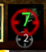

最近程序跟网站都完善的差不多了，后面有空会做一些目前没有的循环。 有推荐的可在文章下面留言，可提供视频地址，或者链接。 后面抽空也会重新制作一起最新版本的教程视频。 相关循环问题，循环开发等，可在右侧聊天室提问，支持手机端，不要单独发文章提问 聊天室支持实时聊天。
评论列表（64）
颜色检查全部通过的 就是执行不了
昨天用的好好的 今天用了要么是部分技能抓取要么是抓取不了这是啥原因啊
@小卡 检查下伽马值，手动填写1.0后再取色，或者你f9点击颜色检测，看下颜色差异，如果有变动说明是其他设置导致颜色变动。
@melis 试过了都没用 奇怪了前两天好好的 我一个台式机一个笔记本 都是这个问题 每个技能循环我都单独取色也没用，执行的时候一会取个别技能一会就没反应
谁能根据现在用的新自由宏，出个零基础的使用教程，完全不会用，难受
求一个单长矛契灵野外的配置 谢谢大佬们
软件在哪里下载，哥哥
@1054539317 主页，最右边
• 需要 arcdps 插件 SkillCastTimer 已加载到游戏 其中SkillCastTimer是什么意思，自动填入延迟和按键，无需手动取色计时。但是键按自动填入了，但是延迟还是空白的，清除缓存那说未找到技能id，请问这个【自动获取施法延迟】是怎么用？？？？
问下新版怎么导入本地文件
@陈晨 修改配置-未分类-设置分类
大佬，请教一下，我先驱F1进帷幕， 出为目前总是少打个42就出来了。按键完全和发的一致， 取色取了多少次都是这样， 要么就是循环好乱
@亚托克斯 进入帷幕跟随2，然后帷幕2=2=退出帷幕，跟随按键记录的2不算作次数，所以实际用了3次2，而计数只有2次，所以是帷幕2=2，才退出。
@melis 确实是这样，不过有时候快退帷幕的时候4技能都跳起来了，结果没伤害直接退出了，而且我食物令状现在最多才打38k，不知为啥
@方方方 给退出帷幕加2个条件，帷幕2黑=帷幕4黑 12点取色
@melis 感谢我佬，可以打到41了。 三个条件退帷幕
@melis 大佬请教一下 怎样才能让鎏金实现自动加血，它有护盾 框选血条和模糊度 没作用。
@残灯孤影忆潇湘 单点取色，取色血条数字下面一点的红色，单点模糊度拉大点，然后选择反色，不要用范围，可以试试。
@melis 大佬 现在能自动释放了，鎏金可能是护盾的关系得取损失后的血量颜色。直接取红色满血也会释放。 大佬 幻术时空 现在不会自动释放纹章怎么回事啊，现在重新取色也不行。
@残灯孤影忆潇湘 纹章有2个版本，一个是取黑色，一个是用剩余cd判断，自己检查。
@melis 好的 谢谢大佬
@残灯孤影忆潇湘 我试试 取黑色 我取红色也是不行 满血仍然自己放
@晚安老妈明天见 谢谢大佬 已经解决了
大佬，打开修改配置，配置列表里是空的，为啥，是我什么东西没下载吗？
@我是烟鬼 你要自己新建配置，这个工具不内置任何循环，都需要你自己导入。
大佬，每次启动宏 都会自动按一次大小写，这个能改一下吗，我把启动按键改成其他按键都不管用
@kpd 这个我记得1个月前就修了，试下今天最新上传的看看。
json放到工具目录，dll放到游戏dps插件同目录。 问下dps插件同目录指的是把三个dll文件都放到addons文件夹吗？
@12 但是还有个说要dll需跟exe同一目录，搞不清楚了
@12 网站翻了好久，是不是json和IbInputSimulator.dll、wincapture.dll这三个放到循环exe一起，arcdps_SkillCastTimer.dll放到游戏目录文件夹吧
@12 dll跟dx11.dll放一个目录，就是dps日志那个
@melis 我没有dx11.dll。。。。。只有一个d3d11.dll
@12 就是这个
@12 我没明白要放哪个文件夹,大哥又文件夹名字么
@圣光 主页右侧 使用说明
最新版，大佬，优先级模式怎么开启呀，我看说明填的技能1，技能2>技能1，技能3>技能1，这么写好像不对呀
@777777 3有CD=技能1，技能1=1=技能2，技能2=1=技能3，技能3=1=技能4，技能5，技能6，技能7，绝学，技能3变，技能5变，技能6变，技能7变，普攻 这个循环优先级模式应该怎么写呢 大佬救救
@777777 默认就是优先级，每放一个技能，都会从第一个技能重新识别，如果检测到会继续判断。
@melis 好的大佬，好像是技能CD的问题，就比如1技能用完23456会短暂转一圈CD，是不是需要把1技能延迟提高还是全局延迟提高
@777777 转的CD都一样 但是有时候会跳过中间的技能把后面打出去了 我还以为是顺序循环
@777777 把全局延迟提高到1.05或者1.1，让技能按完后，有足够的时间做颜色判断，否则太快容易跳着读取，技能1好了，反而按了技能2.
@melis 好的谢谢大佬
最新版，大佬我发现两个问题，第一个是 莫名其妙f9 f10 启动等按键全失灵了 必须重启，第二个就是 反色判断会导致第一个跟随案件不触发，我只要使用反色，第一个跟随按键就失灵
@kpd 第一个条件没遇到过，后面再看看什么时候会触发，第二个反色，不起作用的条件是什么，是单独技能，还是多重 技能1，或者是技能1=技能2反色=技能3?
@melis 刚写的先驱起手 鲜血力量，瘟疫纹章，风险试剂，勇气试剂，痛苦浪潮，恶毒爆冲，先驱帷幕。这个先驱帷幕如果要毛的话，要f1还剩三秒cd的时候开始启动循环，我发现这时候按照普通取色就不会进入帷幕，我的想法就是用左下角黑色的反色作为判断条件就可以进入帷幕了，但这个时候，f1跟随3 2 5就不触发了，跟随按键全部失效，换成正常取色就没这个问题了
@kpd 我看了你写的 先驱帷幕,f1,0,3,500,2,836 f1延迟是0，可能是延迟过低导致f1进入瞬间没触发 跟随 激战里 切任何技能都有一个120毫秒的读条，你改成120试试。
@melis 行我试试，也可能是美服的原因，但是不用反色 跟随案件就完全没问题 好奇怪
大佬，请教一下裁决耐力条满90%后自动翻滚应该怎么设置
@阿木 跟技能一个原理，取色结尾黄色，设置翻滚按键，可以适当添加模糊度
@melis 放指定还是独立循环里？
@阿木 主循环 你翻滚本身就是一个技能 90%满足 ，跟技能颜色满足 这不是一个条件么
@melis 收到，我在研究下，刚取结尾黄色，模糊度设20还是没法直接跳我是v起跳。还有一个情况，我循环了一阵子技能开始有闪烁的效果，就卡在那里不动了，这个如何解决啊
@melis @阿木 技能闪烁的问题解决了，我设置了按下600ms来解决，耐力90起跳还是没成功，其他循环都正常了
@阿木 大佬，看到私聊了，设置了个模糊7，取色尾部黄就搞定了
@阿木 你取色用错了，应该是f9，双击技能名称，点击取色，这是静态取色，鼠标不要放在耐力条上。
大佬，你这个软件可以用在其他游戏里，也挺好用，除了按下技能不弹起这个功能没有外，其他简直完美，不知能否增加这个功能，如识别到A冷却，则一直按下A键不弹起。
@666 按下在f9，双击技能右上角模式里修改，单独按键改为按下，延迟设定为5秒，表示 技能1，触发后，按下5秒后才弹起。这个功能很少用，你可以自己测测现在能实现不。
@melis 试过，我测试过，你的5秒点醒了我，可能是设置的时间是毫秒，所以一抽一抽的，我再尝试一下。
@melis 尝试过了，确实不行，按下这个功能和触发功能一样，大佬有时间帮忙完善一下
@66 我测试没问题，f9-双击技能名称，设置按键类型为按下，延迟5秒，进入游戏，技能按下等待5秒后弹起。激战游戏里找那种技能带红圈的技能，按住时红圈不会消失，说明按下成功触发

用了新的，之前的按开启都用不了啊
@123 自己排查原因，只要不是从太老版本升级都是可以用。
各位大佬能不能写个灵刃的循环啊 老版的D太低了
大佬可不可以出一个新手能看懂的教程，零基础从零开始的那种，比如现在网站里发的一些循环，新手怎样能一步步的放到软件里，现在大家发的好多东西新手都看不懂，不知道回到软件里怎么用，辛苦了大佬